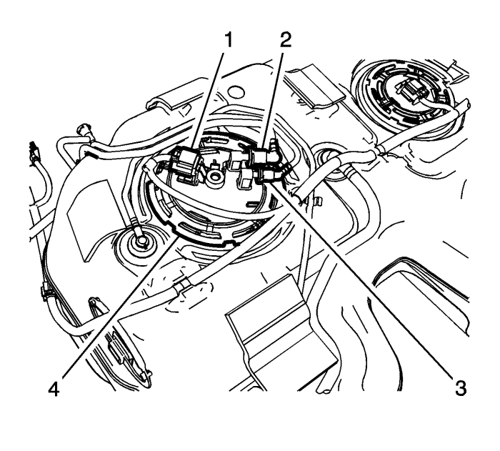

Sustitución del depósito de combustible
Procedimiento de desmontaje
Advertencia : No permita que nadie fume ni use llamas abiertas en la zona donde se esté trabajando con combustible o en el sistema EVAP. Cuando se esté haciendo cualquier trabajo en el sistema de combustible, desconecte el cable negativo de la batería, salvo en aquellas comprobaciones donde haga falta tensión de batería.
Advertencia : Las tuberías de alimentación de combustible permanecerán presurizadas durante largos periodos de tiempo después de que se apague el motor. Esta presión debe eliminarse antes de realizar tareas de servicio en el sistema de combustible.
- Despresurice el combustible. Consultar Descarga de la presión del combustible .
- Desconecte el cable de batería negativo. Consultar Desconexión y conexión del cable de batería negativo .
- Asegúrese de que el nivel de combustible en el depósito sea inferior a 1/4. Si fuera necesario, vacíe el depósito de combustible hasta este nivel. Consultar Drenaje del depósito de combustible .
- Retire el conjunto del silenciador de escape. Consultar Sustitución del tubo delantero : LNQ → LF1 → LE5 .
- Desmonte el árbol de transmisión, si está equipado Consultar Sustitución del árbol de transmisión .
- Desconecte el mazo de cables del depósito de combustible del conector de la carrocería.
- Desconecte el empalme de conexión rápida (2) de la tubería de alimentación de combustible del depósito de combustible y el empalme de conexión rápida de la tubería de retorno de combustible (3) del conjunto del filtro de combustible. Consultar Reparación del cierre rápido con collar de plástico .
- Desenchufe los conectores del mazo de cables (1) del conjunto del filtro de combustible.
- Afloje la abrazadera (1) del tubo flexible del tubo de llenado de combustible situada en el depósito de combustible.

- Desacople los tubos flexibles del respiradero del depósito de combustible (2 3) del tubo de ventilación de combustible.
- Utilizando un gato regulable adecuado, apoye el depósito de combustible.
Atención: No doble las bridas del depósito de combustible. Al doblar las bridas del depósito de combustible se pueden dañar las bridas.
- Retire las tuercas de la cinta del depósito de combustible (1) y bájelas (2).
- Utilizando un gato regulable, baje lentamente y vuelva a colocar el depósito de combustible (3) para retirar el depósito del vehículo. Utilizando un gato regulable, baje lentamente la parte frontal del depósito de combustible. Tire hacia adelante del depósito de combustible para liberar el módulo de accionamiento (RDM) de la parte trasera, si existe, y extraiga el conjunto del depósito de combustible con blindaje del vehículo.
- Si está sustituyendo el depósito de combustible, lleve a cabo los pasos siguientes. En caso contrario, continúe con el procedimiento de instalación.
Procedimiento de desmontaje

- Desenchufe los conectores eléctricos del mazo de cables del depósito de combustible (1, 5) del módulo de la bomba del depósito de combustible y del sensor de nivel de combustible.
- Quite, del depósito de combustible, los tubos de ventilación del depósito de combustible.
- Desmonte los módulos de la bomba de combustible del depósito de combustible. Consultar Sustitución del módulo de la bomba del combustible del depósito de combustible y Sustitución del sensor del nivel de combustible principal .
- Desmonte los elementos de retención del blindaje del depósito de combustible y el blindaje.
Procedimiento de montaje
Precaución: Consulte Precaución con las fijaciones en la sección Prólogo
- Monte los elementos de retención del blindaje del depósito de combustible y el blindaje. Apriete los tornillos a 10 N·m (88 lib. pulg.).
- Monte los módulos de la bomba de combustible del depósito de combustible. Consultar Sustitución del módulo de la bomba del combustible del depósito de combustible y Sustitución del sensor del nivel de combustible principal .
- Monte en depósito de combustible los tubos de ventilación del depósito de combustible.
- Enchufe los conectores eléctricos del mazo de cables del depósito de combustible (1, 5) al módulo de la bomba del depósito de combustible y al sensor de nivel de combustible.
Procedimiento de montaje
- Utilizando un gato regulable, levante lentamente y vuelva a colocar el depósito de combustible (3) para montar el depósito en el vehículo.
Atención: No doble las bridas del depósito de combustible. Al doblar las bridas del depósito de combustible se pueden dañar las bridas.
- Monte las bandas del depósito de combustible (2) y las tuercas (1) y apriételas a 20 N·m (15 lib. pie).
- Retire el gato regulable de debajo del depósito de combustible.
- Acople los tubos flexibles del respiradero del depósito de combustible (2 3) al tubo de ventilación de combustible.
- Conecte el tubo flexible de llenado de combustible al depósito de combustible y coloque la abrazadera (1).
- Enchufe los conectores del mazo de cables (1) al conjunto del filtro de combustible.
- Conecte el empalme de conexión rápida (2) de la tubería de alimentación de combustible del depósito de combustible y el empalme de conexión rápida de la tubería de retorno de combustible (3) al conjunto del filtro de combustible. Consultar Reparación del cierre rápido con collar de plástico .
- Conecte el mazo de cables del depósito de combustible del conector de la carrocería.
- Monte el árbol de propulsión. Consultar Sustitución del árbol de transmisión .
- Monte el sistema de escape. Consultar Sustitución del tubo delantero : LNQ → LF1 → LE5 .
- Conecte el cable negativo de la batería. Consultar Desconexión y conexión del cable de batería negativo .
- Ejecute el procedimiento de cebado del sistema de combustible y compruebe si hay fugas. Consultar Cebado del sistema de combustible .
| © Copyright Chevrolet Europe. All rights reserved |